library(sf)
library(tmap)
library(gstat)
library(terra)11 Geostatystyka: Analiza i modelowanie autokorelacji przestrzennej
W poniższych przykładach wykorzystamy dane zapisane w pliku punkty.csv oraz przestrzenny zasięg granicy obszaru (granica.gpkg).
punkty = read.csv("data/punkty.csv")
punkty = st_as_sf(punkty, coords = c("x", "y"), crs = "EPSG:2180")
punkty = punkty[!is.na(punkty$temp), ]
granica = read_sf("data/granica.gpkg")11.1 Geostatystyczna analiza danych
Geostatystyka to gałąź statystyki skupiająca się na przestrzennych lub czasoprzestrzennych zbiorach danych.
Celem geostatystyki może być:
- zrozumienie zmienności przestrzennej lub czasowej zjawiska,
- interpolacja (estymacja przestrzenna),
- symulowanie wartości,
- optymalizacja sieci pomiarowej.
Geostatystyczna analiza danych może przyjmować różną postać w zależności od postawionego celu analizy. Poniższy schemat przedstawia uproszczoną ścieżkę postępowania geostatystycznego.
Uproszczona ścieżka postępowania geostatystycznego.
Etap 1: Pozyskanie i wstępna weryfikacja danych
Punktem wyjścia analizy geostatystycznej jest posiadanie danych przestrzennych opisujących badane zjawisko, np. w postaci punktowej. Przykładem takiego zjawiska są punktowo wykonane pomiary temperatury.
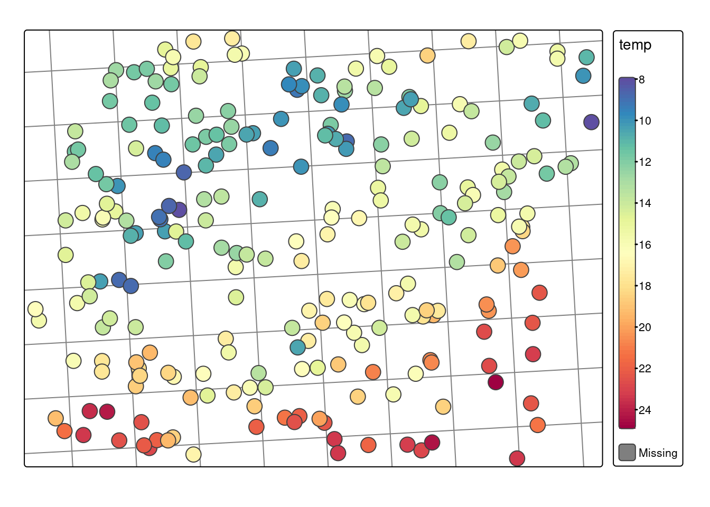
Etap 2: Nieprzestrzenna i przestrzenna eksploracja danych
Dane należy poddać eksploracji w celu ich lepszego poznania, wyszukania relacji między zmiennymi, czy znalezienia potencjalnych błędów.
Eksploracyjna analiza danych obejmuje:
- Charakterystykę statystyczną danych.
- Sprawdzenie poprawności współrzędnych.
- Sprawdzenie poprawności danych, w tym między innymi identyfikacja danych odstających lokalnie.
- Wgląd w tym próbkowania.
- Ogólny pogląd na zmienność przestrzenną, wykorzystanie prostej automatycznej procedury interpolacji.
Etap 3: Analiza i interpretacja struktury przestrzennej
Jednym z celów geostatystycznej analizy danych jest identyfikacja i zrozumienie przestrzennej zmienności analizowanej cechy. Zmienność przestrzenna analizowanej cechy może być określona za pomocą semiwariancji, a następnie zwizualizowana za pomocą semiwariogramu.
Semiwariogram empiryczny (oparty o danych) jest wykresem pokazującym relację pomiędzy odległością a semiwariancją (jedną z miar autokorelacji przestrzennej). Za jego pomocą możemy stwierdzić jak to zjawisko zmienia się w przestrzeni.
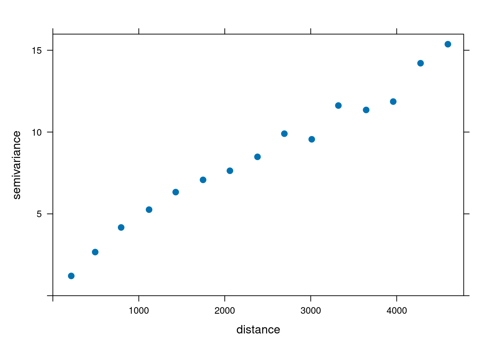
Etap 4: Modelowanie matematyczne struktury przestrzennej (autokorelacji przestrzennej)
Modelowanie struktury przestrzennej polega na dopasowanie modelu (funkcji) do semiwariogramu empirycznego (wyliczonego z danych). Pozwala on zarówno na lepszy opis zmienności zjawiska, jak również służy do tworzenia estymacji czy też symulacji.
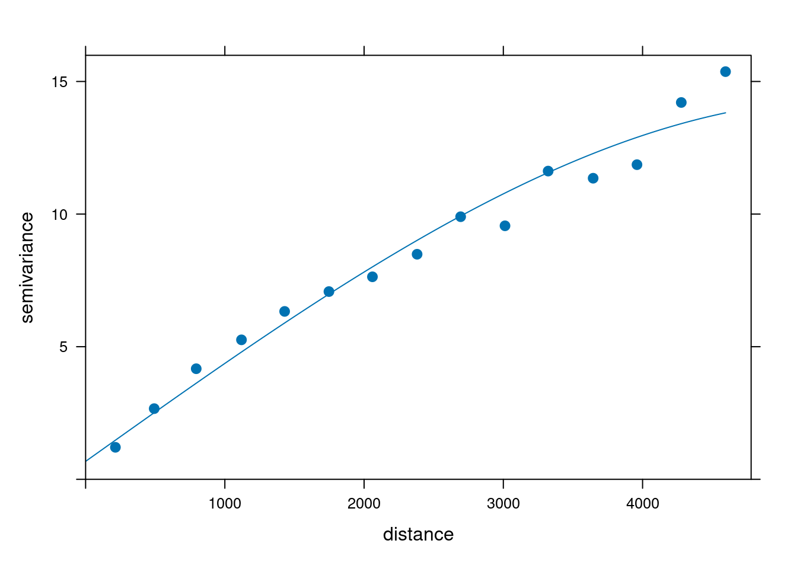
11.1.1 Etap 5: Estymacja lub symulacja
Estymacja to rodzaj interpolacji przestrzennej, która oblicza najbardziej potencjalnie możliwą wartość dla wybranej lokalizacji.
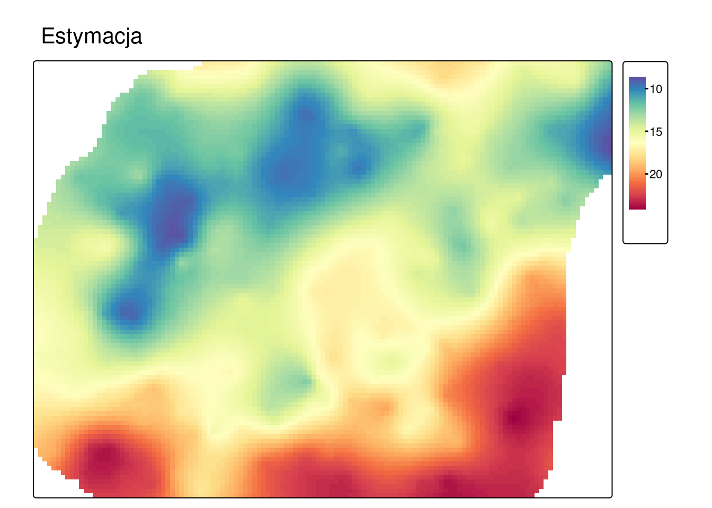
Rolą symulacji jest natomiast generowanie równie prawdopodobne możliwości rozkładu badanej cechy.
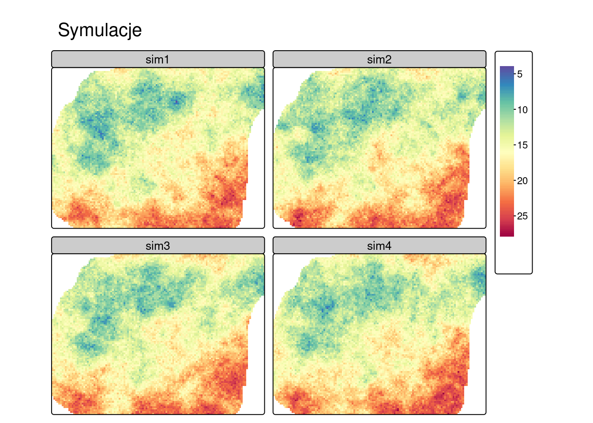
11.2 Wykres rozrzutu z przesunięciem
W klasycznej statystyce relację między dwoma zmiennymi określa się za pomocą korelacji (np. współczynnik korelacji liniowej Pearsona). W geostatystyce badamy jedną zmienną, ale pomiędzy dwoma punktami odległymi od siebie o pewien dystans (określany jako lag, h). Wykorzystuje się w tym celu wykres rozrzutu z przesunięciem. Wykres rozrzutu z przesunięciem pokazuje korelację pomiędzy wartościami analizowanej cechy w pewnych grupach odległości. Taki wykres można stworzyć używając funkcji hscat() z pakietu gstat
hscat(temp~1, data = punkty, breaks = seq(0, 4000, by = 500))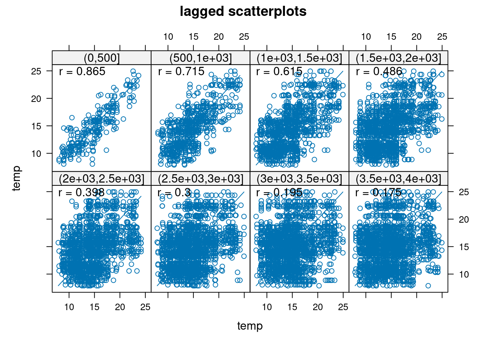
Przykładowo, na powyższym wykresie widać wartość cechy temp z kolejnymi przesunięciami - od 0 do 500 metrów, od 500 metrów do 1000 metrów, itd. W pierwszym przedziale wartość cechy temp z przesunięciem wykazuje korelację na poziomie 0,876, a następnie z każdym kolejnym przedziałem (odległością) ta wartość maleje. W przedziale 3500 do 4000 metrów osiąga jedynie 0,128. Pozwala to na stwierdzenie, że cecha temp wykazuje zmienność przestrzenną - podobieństwo jej wartości zmniejsza się wraz z odległością.
11.3 Semiwariancja
Zmienność przestrzenna analizowanej cechy może być określona m.in za pomocą semiwariancji \(\gamma(h)\).
Semiwariancja to połowa średniej kwadratu różnicy pomiędzy wartościami badanej zmiennej (\(z\)) w dwóch lokalizacjach odległych o wektor \(h\)
\[\gamma(h) = \frac{1}{2}(z(u_{\alpha}) - z(u_{\alpha} + h))^2\]
11.3.1 Obliczenie semiwariancji między dwoma punktami
Przykładowo, aby wyliczyć wartość semiwariancji (gamma) pomiędzy dwoma punktami musimy znać:
wartość pierwszego z nich (\(z(u_{\alpha})\)),
- w przykładzie \(z(u_{\alpha}) = 13.85\) stopni Celcjusza
wartość drugiego z nich (\(z(u_{\alpha} + h)\),
- w przykładzie \(z(u_{\alpha} + h)=15.48\) stopni Celsjusza.
Możemy zatem obliczyć wartość semiwariancji:
\[\gamma(h) = \frac{1}{2}(13,85 - 15,48)^2 = \frac{1}{2}(-1,63)^2 = \\ \frac{1}{2} \times 2,6569 = 1,32845 \approx 1,33 \]
Korzystając z wzoru na semiwariację otrzymujemy wartość równą ok. 1,33. Znamy również odległość między punktami (ok. 3240,89 metra), więc możemy w uproszczeniu stwierdzić, że dla tej pary punktów odległych o 3240 metrów wartość semiwariancji wynosi około 1,33.
W R obliczenia wyglądałyby następująco:
#wykorzystanie funkcji st_distance do obliczenia odległości między dwoma punktami
odl = st_distance(punkty[c(1, 2), ])[2]
#obliczenie wartości semiwariancji między dwoma puntami
gamma = 0.5 * (punkty$temp[1] - punkty$temp[2]) ^ 2
gamma[1] 1.33169111.3.2 Chmura semiwariogramu
Jeżeli w badanej próbie mamy \(n\) obserwacji oznacza to, że możemy zaobserwować \(\frac{1}{2}n(n-1)\) par obserwacji. Dla każdej z par obserwacji obliczana jest semiwariancja. Tę semiwariancję można zaprezentować na wykresie zwanym chmurą semiwariogramu. Lokalizacja każdego punktu na chmurze semiwariogramu określona jest przez 2 współrzędne:
- \(x\): odległość między dwoma punktami
- \(y\): wartość semiwariancji.
Chmurę semiwariogramu w R używając funkcji variogram() z argumentem cloud = TRUE.
vario_cloud = variogram(temp ~ 1, locations = punkty,
cloud = TRUE)
plot(vario_cloud)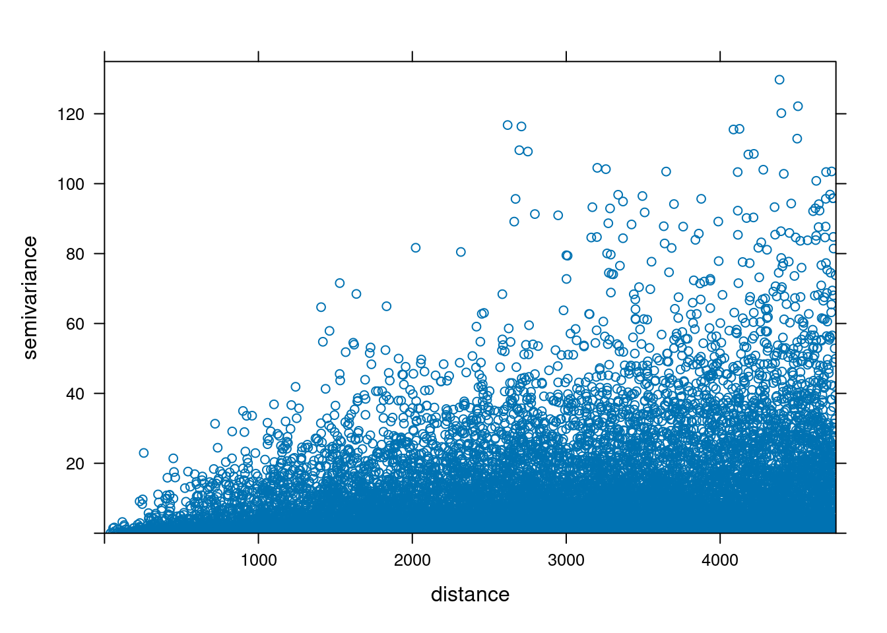
Chmura semiwariogramu pozwala także na zauważenie par punktów, których wartości znacząco odstają.
11.4 Semiwariogram: charakterystyka struktury przestrzennej
Semiwariogram jest wykresem pokazującym relację pomiędzy odległością a semiwariancją. Inaczej mówiąc, dla kolejnych odstępów (lagów) wartość semiwariancji jest uśredniana i przestawiania w odniesieniu do odległości.
\[\hat{\gamma}(h) = \frac{1}{2N(h)}\sum_{\alpha=1}^{N(h)}(z(u_{\alpha}) - z(u_{\alpha}+h))^2\]
, gdzie \(N(h)\) oznacza liczbę par punktów w odstępie \(h\).
W oparciu o semiwariogram empiryczny (czyli oparty na danych) możemy następnie dopasować do niego model.
11.4.1 Tworzenie semiwariogramu
Stworzenie podstawowego semiwariogramu w pakiecie gstat odbywa się z użyciem funkcji variogram(). Należy w niej zdefiniować analizowaną zmienną (w tym przykładzie temp ~ 1) oraz zbiór punktowy (punkty).
vario_par = variogram(temp ~ 1, locations = punkty)
vario_par np dist gamma dir.hor dir.ver id
1 113 214.0615 1.205854 0 0 var1
2 296 492.6029 2.664303 0 0 var1
3 450 794.4754 4.168964 0 0 var1
4 659 1119.4215 5.258232 0 0 var1
5 825 1429.3537 6.330027 0 0 var1
6 930 1747.4842 7.078197 0 0 var1
7 960 2059.9222 7.634849 0 0 var1
8 1126 2380.7339 8.485727 0 0 var1
9 1244 2693.4708 9.900739 0 0 var1
10 1179 3012.0195 9.558005 0 0 var1
11 1294 3321.8058 11.621229 0 0 var1
12 1336 3645.0145 11.352249 0 0 var1
13 1349 3959.8583 11.863130 0 0 var1
14 1400 4277.9695 14.207606 0 0 var1
15 1458 4595.7696 15.371019 0 0 var1Do wyświetlenia semiwariogramu służy funkcja plot(). Można również dodać informację o liczbie par punktów, jaka posłużyła do wyliczenia semiwariancji dla kolejnych odstępów poprzez argument plot.numbers = TRUE
plot(vario_par, plot.numbers = TRUE)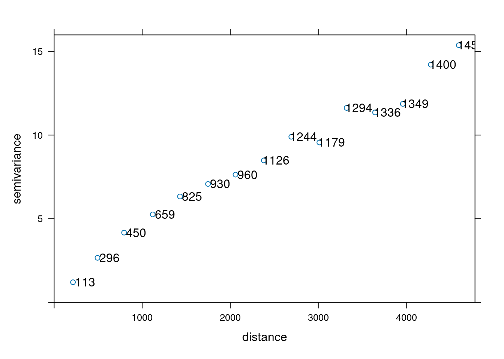
11.4.2 Parametry semiwariogramu
Przy ustalaniu parametrów semiwariogramu powinno się stosować do kilku utartych zasad (tzw. rules of thumb):
- W każdym odstępie powinno się znaleźć co najmniej 30 par punktów.
- Maksymalny zasięg semiwariogramu (ang. cutoff distance) to 1/2 pierwiastka z badanej powierzchni (inne źródła mówią o połowie z przekątnej badanego obszaru/jednej trzeciej).
- Liczba odstępów powinna nie być mniejsza niż 10.
- Optymalnie maksymalny zasięg semiwariogramu powinien być dłuższy o 10-15% od zasięgu zjawiska.
- Optymalnie odstępy powinny być jak najbliżej siebie i jednocześnie nie być chaotyczne.
- Warto metodą prób i błędów określić optymalne parametry semiwariogramu.
11.4.3 Obliczenia pomocnicze
Liczba par obserwacji
W zrozumieniu danych oraz przy określaniu parametrów semiwariogramu może pomóc szereg obliczeń pomocniczych. Przykładowo, aby wyliczyć liczbę par obserwacji można użyć poniższego kodu.
0.5 * nrow(punkty) * (nrow(punkty) - 1)[1] 30381Średnia odległość między punktami
Powierzchnia zajmowana przez jedną próbkę jest osiągana poprzez podzielenie całej badanej powierzchni poprzez liczbę punktów.
pow_pr = st_area(granica) / nrow(punkty)
pow_pr256585.6 [m^2]Średnia odległość między punktami to wartość pierwiastka z powierzchni zajmowanej przez jedną próbkę.
sqrt(pow_pr)506.5428 [m]Maksymalny zasięg semiwariogramu
Ostatnim obliczeniem pomocniczym jest określenie połowy pierwiastka powierzchni. Może być ono następnie użyte do ustalenia maksymalnego zasięgu semiwariogramu.
pow = st_area(granica)
0.5 * sqrt(pow)3980.472 [m]11.4.4 Modyfikacja semiwariogramu
Maksymalny zasięg semiwariogramu (ang. cutoff distance) jest domyślnie wyliczany w pakiecie gstat jako 1/3 z najdłuższej przekątnej badanego obszaru. Można jednak tę wartość zmodyfikować używając argumentu cutoff .
vario_par = variogram(temp ~ 1, locations = punkty,
cutoff = 4000)
plot(vario_par)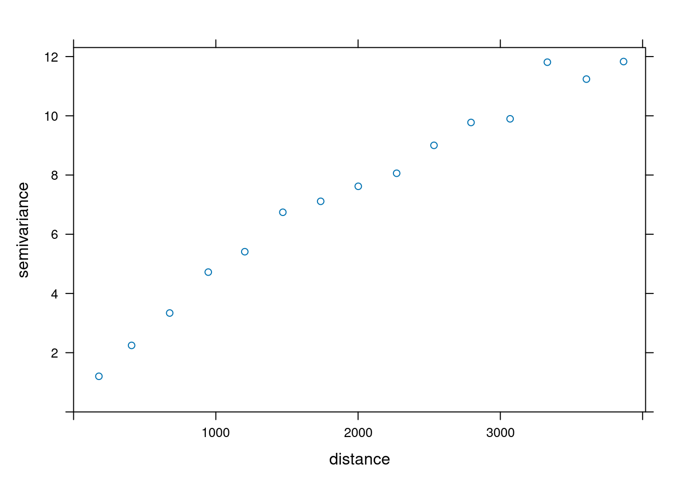
Dodatkowo, domyślnie w pakiecie gstat odległość między przedziałami (ang. interval width) jest wyliczana jako maksymalny zasięg semiwariogramu podzielony przez 15. Można to oczywiście zmienić używając zarówno argumentu cutoff, jak i argumentu width mówiącego o szerokości odstępów
vario_par = variogram(temp ~ 1, locations = punkty,
cutoff = 4000, width = 100)
plot(vario_par)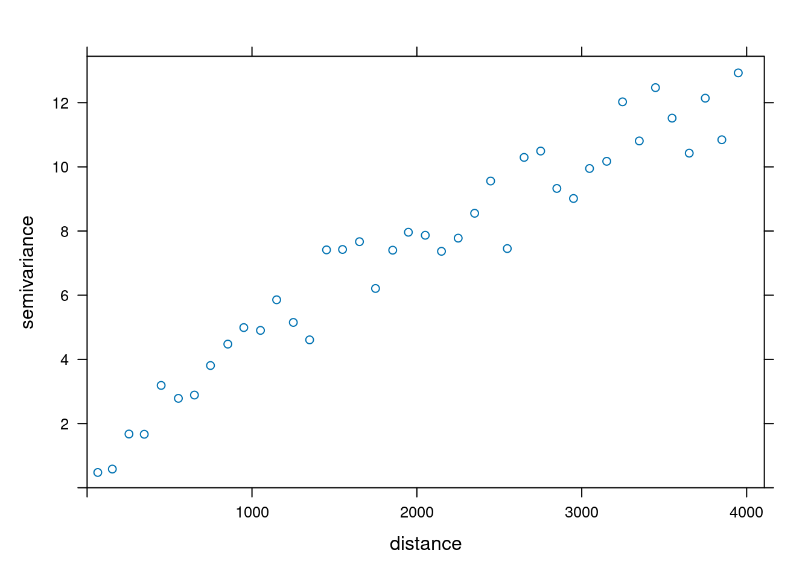
11.5 Modelowanie autokorelacji przestrzennej
Modelowanie autokorelacji przestrzennej polega na dopasowanie modelu (funkcji) do semiwariogramu empirycznego (wyliczonego z danych). Pozwala on zarówno na lepszy opis zmienności zjawiska, jak również służy do tworzenia estymacji czy też symulacji.
11.5.1 Model semiwariogramu
Model semiwariogramu składa się zazwyczaj z trzech podstawowych elementów:
- Nugget - efekt nuggetowy - pozwala na określenie błędu w danych wejściowych oraz zmienności na dystansie krótszym niż pierwszy odstęp.
- Sill - semiwariancja progowa - oznacza wariancję badanej zmiennej.
- Range - zasięg - to odległość do której istnieje przestrzenna korelacja.
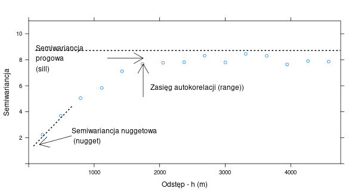
11.5.1.1 Modele podstawowe
Pakiet gstat zawiera 20 podstawowych modeli geostatystycznych, w tym najczęściej używane takie jak:
Nuggetowy (ang. Nugget effect model)
- określa sytuację, w której analizowana zmienna nie wykazuje autokorelacji (niepodobieństwo jej wartości nie wzrasta wraz z odległością)
- nie powinien być używany samodzielnie - w większości zastosowań jest on elementem modelu złożonego. Służy on do określania, między innymi, błędu pomiarowego czy zmienności na krótkich odstępach.
Sferyczny (ang. Spherical model)
- jeden z najczęściej stosowanych modeli
Wykładniczy (ang. Exponential model)
- jeden z najczęściej stosowanych modeli;
- nie ma skończonego zasięgu,
- zamiast zasięgu podaje się tzw. zasięg praktyczny, tj. odległość na jakiej model osiąga 95% wartości wariancji progowej
Gaussowski (ang. Gaussian model)
- posiada zasięg praktyczny definiowany jako 95% wartości wariancji progowej
- jego cechą charakterystyczną jest paraboliczny kształt na początkowym odcinku.
Potęgowy (ang. Power model)
- przykład tzw. modelu nieograniczonego
- wartość modelu rośnie w nieskończoność, dlatego niemożliwe jest określenie jego zasięgu.
- w przypadku modelu potęgowego, parametr range oznacza wykładnik potęgowy.
Do wyświetlenia listy nazw modeli i ich skrótów służy funkcja vgm().
vgm() short long
1 Nug Nug (nugget)
2 Exp Exp (exponential)
3 Sph Sph (spherical)
4 Gau Gau (gaussian)
5 Exc Exclass (Exponential class/stable)
6 Mat Mat (Matern)
7 Ste Mat (Matern, M. Stein's parameterization)
8 Cir Cir (circular)
9 Lin Lin (linear)
10 Bes Bes (bessel)
11 Pen Pen (pentaspherical)
12 Per Per (periodic)
13 Wav Wav (wave)
14 Hol Hol (hole)
15 Log Log (logarithmic)
16 Pow Pow (power)
17 Spl Spl (spline)
18 Leg Leg (Legendre)
19 Err Err (Measurement error)
20 Int Int (Intercept)Można się również im przyjrzeć używając funkcji show.vgms()
show.vgms()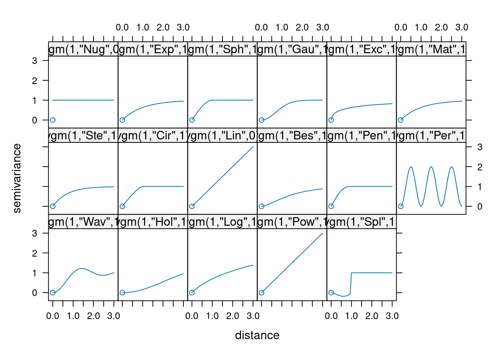
Istnieje możliwość wyświetlenia tylko wybranych modeli podstawowych poprzez argument models
show.vgms(models = c("Sph", "Gau", "Pow", "Exp"),
range = 1.4, max = 2.5)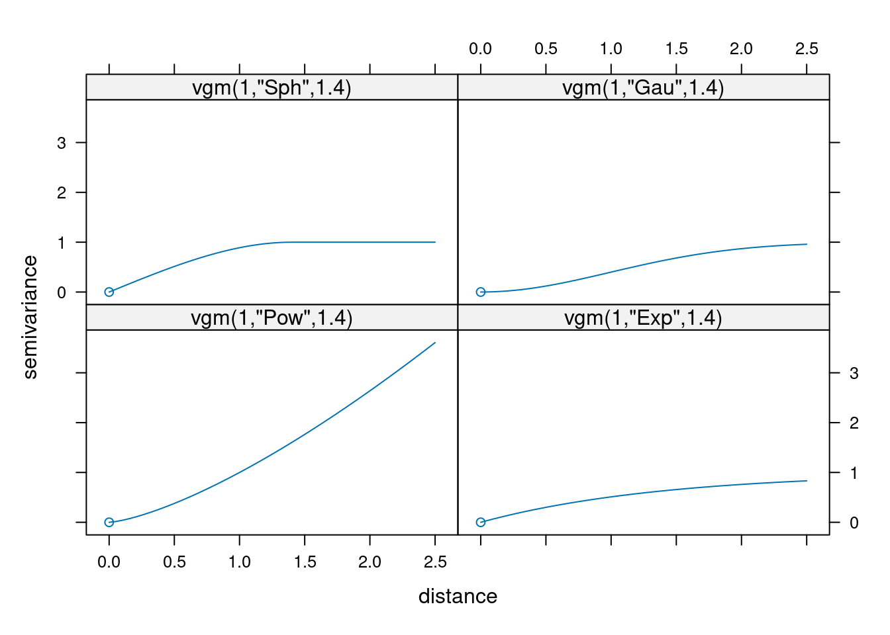
Dodatkowo, można je porównać na jednym wykresie poprzez argument as.groups = TRUE
show.vgms(models = c("Sph", "Gau", "Pow", "Exp"),
range = 1.4, max = 2.5, as.groups = TRUE)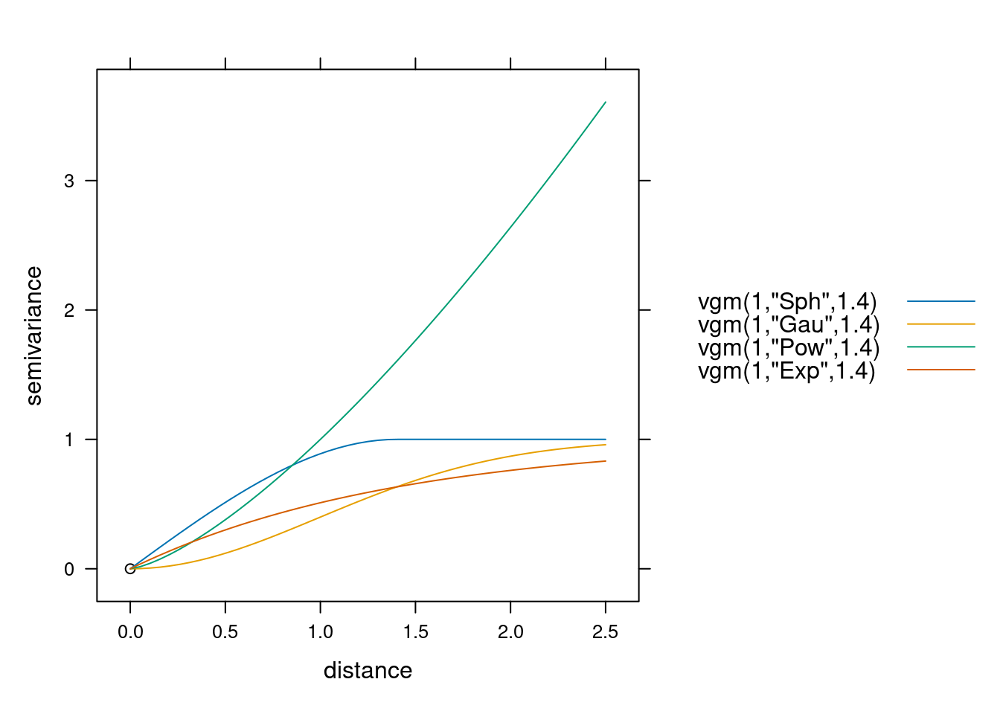
11.5.1.2 Dopasowanie modelu w R
Do zbudowania modelu semiwariogramu należy wykonać szereg kroków:
Stworzyć i wyświetlić semiwariogram empiryczny analizowanej zmiennej z użyciem funkcji
variogram()orazplot().Zdefiniować wejściowe parametry semiwariogramu.
- W najprostszej sytuacji wystarczy zdefiniować używany model/e poprzez skróconą nazwę używanej funkcji (
model). - Możliwe, ale nie wymagane jest także określenie wejściowej semiwariancji cząstkowej (
psill) oraz zasięgu modelu (range) w funkcjivgm(). - Uzyskany model można przedstawić w funkcji
plot()podając nazwę obiektu zawierającego semiwariogram empiryczny oraz obiektu zawierającego model.
- W najprostszej sytuacji wystarczy zdefiniować używany model/e poprzez skróconą nazwę używanej funkcji (
Dopasować parametry modelu używając funkcji
fit.variogram().- To dopasowanie można również zwizualizować używając funkcji
plot().
- To dopasowanie można również zwizualizować używając funkcji
11.5.2 Przykład: Analiza i modelowanie struktury przestrzennej zmiennej temperatura
Dane
punkty = read.csv("data/punkty.csv")
punkty = st_as_sf(punkty, coords = c("x", "y"), crs = "EPSG:2180")
punkty = punkty[!is.na(punkty$temp), ]Etap 1: Stworzenie i wyświetlenie semiwariogramu empirycznego
Semiwariogram empiryczny tworzy się używając funkcji variogram() z pakietu gstat(). Należy w niej zdefiniować analizowaną zmienną (w tym przykładzie temp ~ 1) oraz zbiór punktowy (punkty).
vario = variogram(temp ~ 1, locations = punkty)
plot(vario)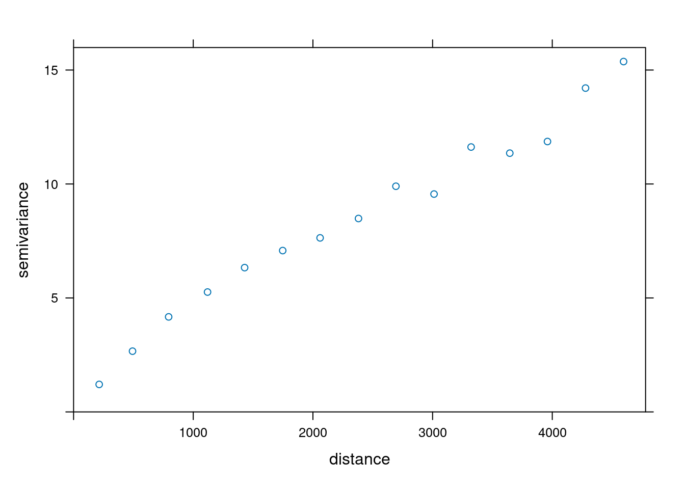
Etap 2: Zdefiniowanie podstawowych parametrów semiwariogramu
W tym kroku należy podjąć decyzję o typie modelu (sferyczny, wykładniczy, itp.) oraz zdefiniować podstawowe parametry semiwarigramu:
nugget
- zazwyczaj semiwariogram nie zaczyna się w punkcie (0,0).
- wartość nuggetu odczytujemy jako przesunięcie wartości na osi y
semiwariancję progową (psill)
- oznacza wariancję badanej zmiennej;
- wartość semiwariancji progowej odczytujemy z osi y: wartość semiwaiancji po ustabilizowaniu się jej wartości (wartość ta już nie rośnie wraz z odległością)
zasięg (range)
- to odległość do której istnieje przestrzenna autokorelacja;
- jest to wartość odczytana z osi x (odległość) do której następuje wzrost wartości semiwariancji wraz z odległością.
W R do określenia typu modelu oraz jego podstawowych parametrów używa się funkcji vgm() z pakietu gstat
model_sph = vgm(psill = 10, model = "Sph", range = 3000)
model_sph model psill range
1 Sph 10 3000Funkcja plot() pozwala na wizualizację dopasowania modelu do danych. Najważniejsze jest dobre dopasowanie modelu do semiwariogramu empirycznego (punkty na wykresie poniżej) w początkowym odcinku semiwariogramu (tam gdzie obserwujemy wzrost semiwariancji wraz z odleglością).
plot(vario, model = model_sph)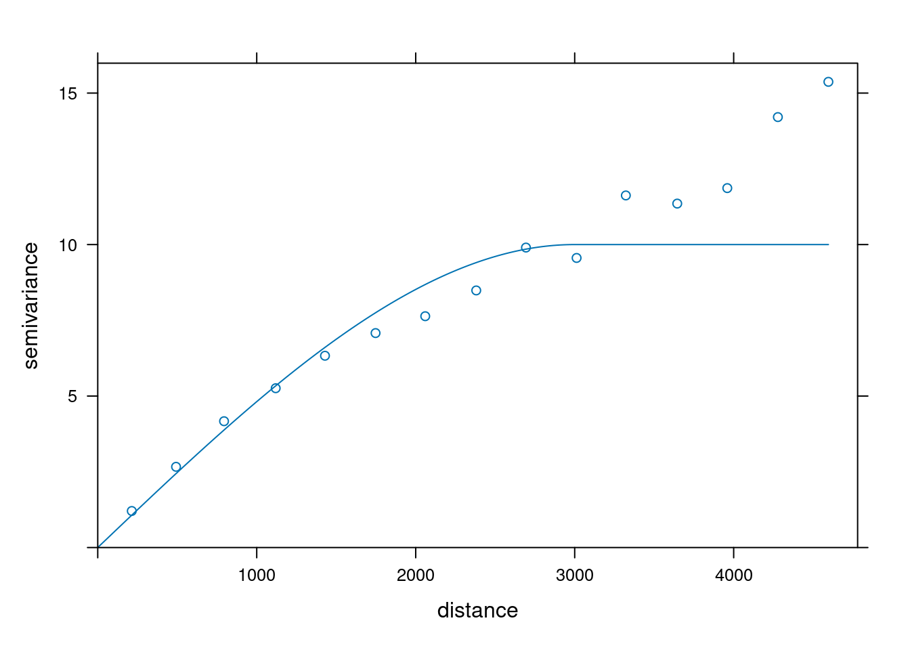
Do powyżej zdefiniowanych parametrów dodamy jeszcze wartość efektu nuggetowego:
model_sph2 = vgm(psill = 10, model = "Sph", range = 3000, nugget =0.5)
model_sph2 model psill range
1 Nug 0.5 0
2 Sph 10.0 3000plot(vario, model = model_sph)Możemy zaobserwować, że dodanie wartości nuggetu “nieco podniosło” linię modelu powodując, że jest ona lepiej dopasowana w początkowym odcinku semiwariogramu.
Etap 3: Dopasowanie parametrów modelu
Funkcja fit.variogram() pozwala na automatyczne dopasowanie modelu w oparciu o wstępnie podane parametry.
fitted_sph = fit.variogram(vario, model_sph2)
fitted_sph model psill range
1 Nug 0.6755637 0.0
2 Sph 13.6466875 5479.9plot(vario, model = fitted_sph)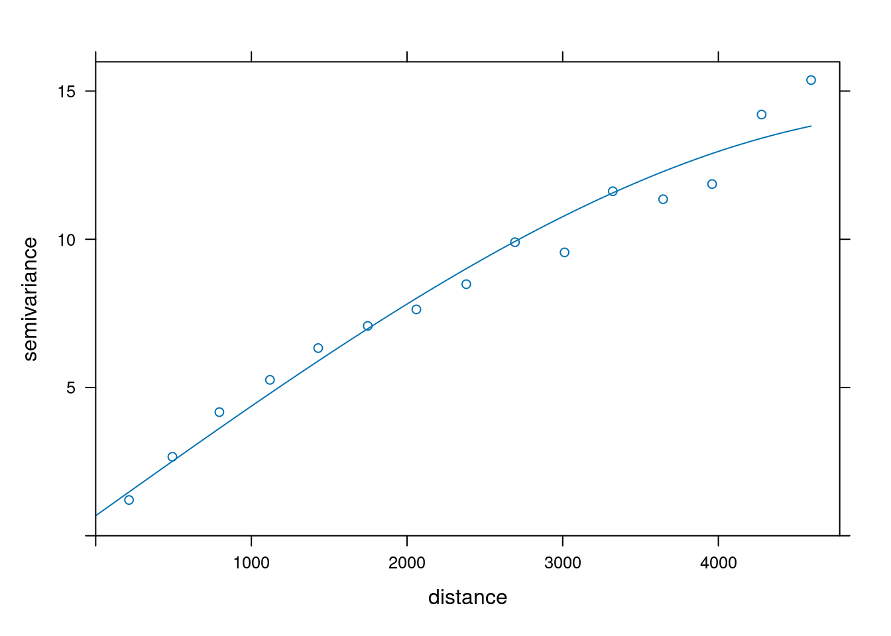